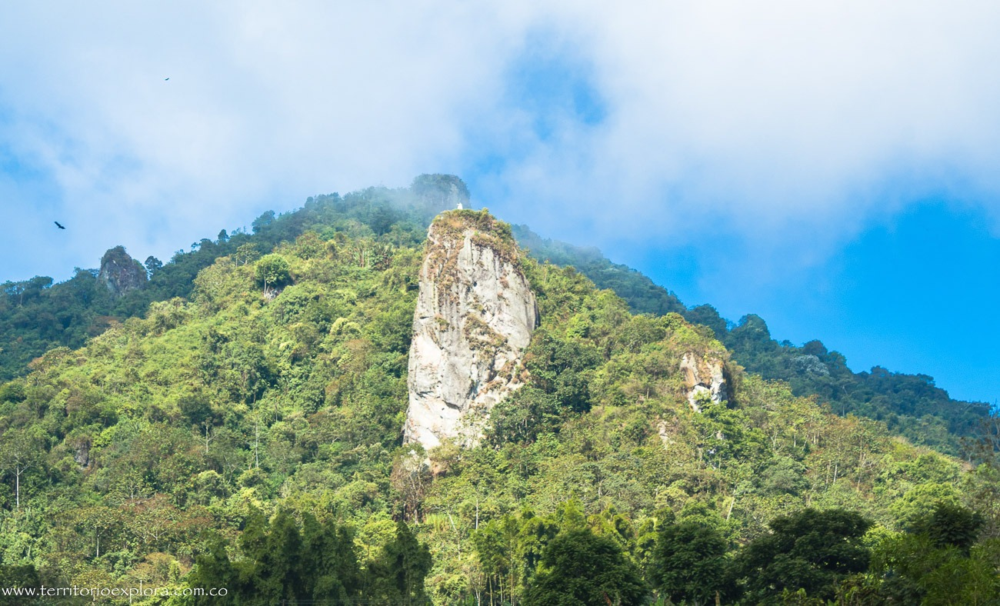
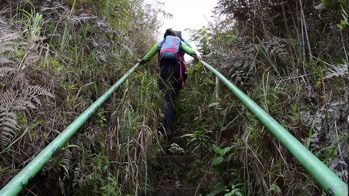
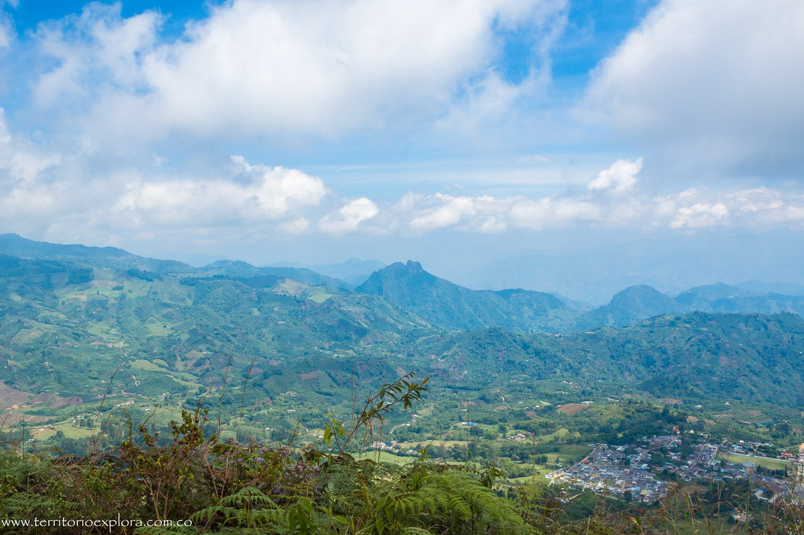
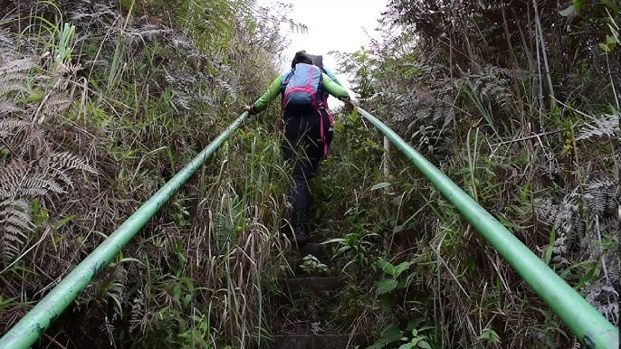
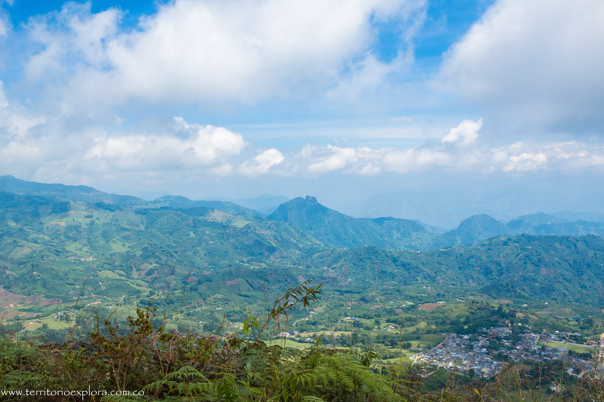
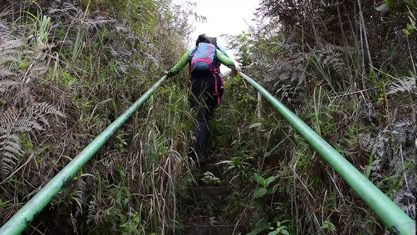
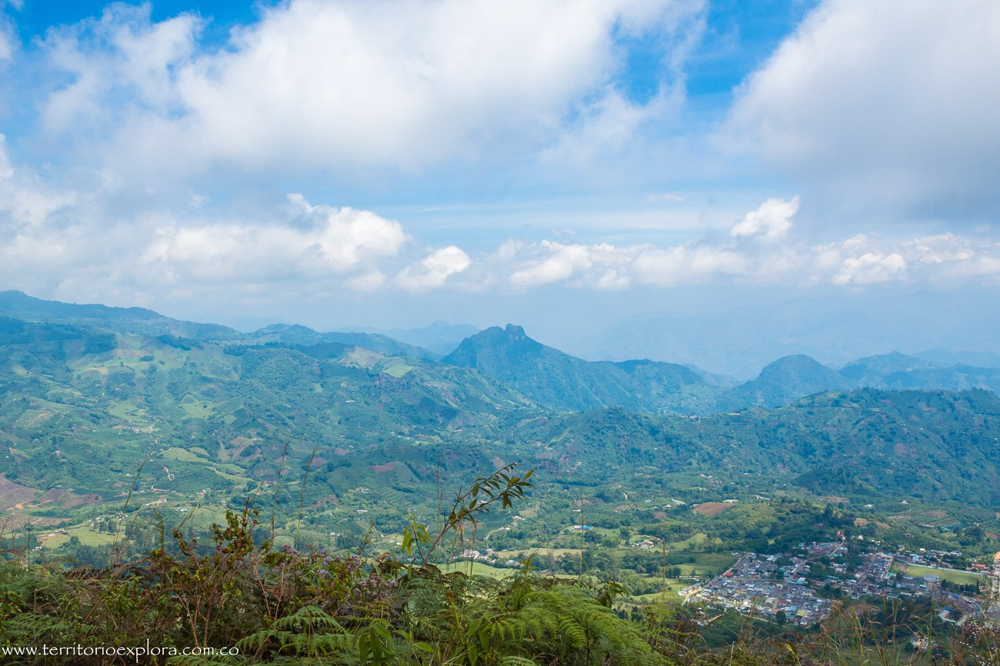

Reserva Natural Cerro Gobia
Quinchía, Risaralda

 





Descripción
La Reserva Natural Cerro Gobia es un importante punto natural ubicado cerca de Quinchía, Risaralda. Este lugar ofrece una experiencia única de senderismo con vistas panorámicas espectaculares, biodiversidad local y la oportunidad de conectar con la naturaleza en un entorno preservado.
Características
- 🏔️ Cerro natural
- 🌿 Flora nativa
- 🦜 Avistamiento de aves
- 🚶♂️ Senderos ecológicos
- 📸 Puntos fotográficos
- 🌅 Vistas panorámicas
- 🍃 Aire puro
Horarios y Precios
Horario:
6:00 AM - 5:00 PM
Días:
Todos los días
Entrada:
Consultar guías locales
Restaurantes cercanos
-
Emilia Café Club
- Café y cervecería
- Ambiente acogedor
- Comida ligera
-
La Friducha
- Comida rápida gourmet
- Especialidad en gorditas
- Presentación única
-
Merced Latino Restaurante
- Comida fusión
- Sabores tradicionales
- Toques modernos
-
El Balcón de las Delicias
- Comida típica
- Ambiente familiar
- Platos regionales
Alojamientos cercanos
-
Hotel Quinchía
- Ubicación céntrica
- Wi-Fi gratuito
- Tours organizados
-
Finca Hotel Los Guayacanes
- Alojamiento rural
- Entorno natural
- Ambiente tranquilo
-
Alojamientos en Airbnb
- Opciones variadas
- Casas de campo
- Estancias personalizadas
Recomendaciones
- 🥾 Calzado para senderismo
- 🧴 Protector solar
- 💧 Agua suficiente
- 🎒 Mochila ligera
- 📱 Contactar guías locales